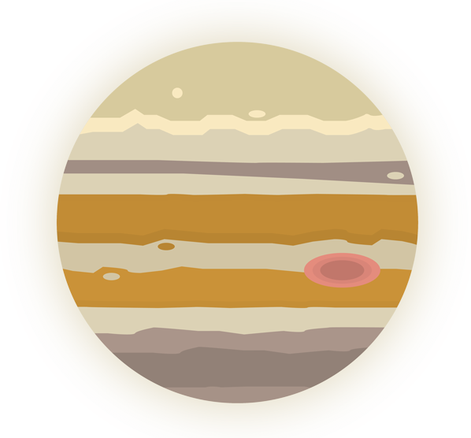

Jupiter was discovered by ancient Babylonians.

Jupiter has the shortest day of all the planets.


Jupiter is the largest planet in the solar system.
There is an asteroid belt between Mars and Jupiter
that is made of ice and rock.
Jupiter has at least 67 moons.
Most are captured asteroids, but some are as large as Mercury.


Jupiters giant red spot is a massive storm that is larger
than Earth and has been going on for hundreds of years.

Hubble Space Telescope took pictures of comet
Shoemaker-Levy 9 crashing into Jupiter.

Jupiter has a very strong magnetic field.
It is stronger than Earths magnetic field.
8 spacecraft have visited Jupiter. The most recent being Juno.
Jupiter has unique cloud layers that are made up of different gases.